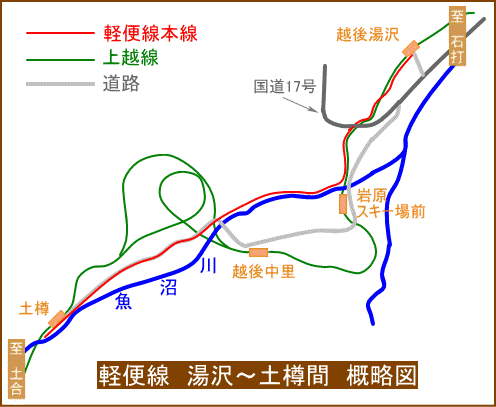

| 上越線の建設工事で活躍した軽便線 | ||||||||
| 上越線で一番の難工事となった水上～越後湯沢間を建設する際、労働者や資材を円滑に現場に送り込むため、群馬県側の沼田～土合間と新潟県側の湯沢～土樽間に軽便線が敷かれました。その歴史について簡単に紹介します。 | ||||||||
| 群馬県側・沼田～土合間 | ||||||||
| 群馬県側の軽便線は全体を2つの工区に分け、第一工区を沼田～大穴（水上町）間、第二工区を大穴～土合間として建設された。冒頭で書いた通り、この軽便線は上越線の建設で一番の難所となった現場に、労働者や資材を円滑に送り込む為に敷設された。（群馬県側の現場とは：清水トンネル土合口・湯檜曽第一～第四トンネル・湯檜曽ループ区間の事を指す） 軽便線の詳しい話に入る前に上越線の建設概要を少しだけ記す。通常、全長が長い鉄道を建設する際はその建設工事をいくつかの工区に分けて建設をする。上越線の場合、まず群馬県側を「南線」・新潟県側を「北線」と分類し、さらにそれぞれを10の工区に細分して合計20の工区に分けられた。道路網が発達した現代であれば、これらの工区にトラックで一斉に資材を運び、全工区で一斉に工事をして全区間同時開業…という事も可能であろうが、上越線が建設された大正7年から昭和初期にかけては資材を運ぶ沿線の道路網が貧弱だった為、そのような工事はできなかった。そのため、群馬県側の上越南線の場合、資材の搬入が容易だったと思われる両毛線との分岐点（現在の新前橋駅付近）から着工してまず新前橋～渋川間を開通させ、その後、渋川～沼田、沼田～後閑、後閑～水上と順を追って開業させていった。 一方、ループ線や清水トンネルなどの難工事を抱える水上以北は、その工期が長期に渡る事が当初から予想されていたため、なるべく早期に着工させる必要があった。そのためには道路を利用して資材を先送りしなければならなかった訳だが、沼田から土合に至るまでの道路の造りが貧弱だったため、馬車などを利用した資材運搬が円滑に進まない恐れがあった。そこで、水上以北の早期着工を図る目的で沼田～土合間に軽便線を施設することとし、上越南線が渋川まで開通した翌年の大正12年に建設工事に着手した。この軽便線の詳細なルートは不明だが、市街地や橋梁等を除き、概ね県道に沿う格好で建設されたようである。また、軽便線の建設開始当初は鉄道連隊の演習として建設されていたが、建設が完了する前に演習期間が終了した為、連隊は建設半ばで引き上げてしまった。以後、建設事務所が直轄で敷設作業を進め、大正12年10月17日に第一工区の沼田～水上間が完成となる。一方、第二工区の大穴～土合間は同年10月8日に既に工事が完了していた為、第一工区の完了をもってこの軽便線は完成となった。 この軽便線が完成した大正12年10月当時、上越南線は渋川まで開通していたが、その渋川と軽便線の起点である沼田の間の物資の輸送は、東京電燈株式会社(旧利根軌道)・渋川-沼田線の電気軌道便と 、馬車輸送を併用して行う事にした。しかし、翌13年3月31日に上越南線の渋川～沼田間が開通したため、同区間の物資輸送は上越南線に振り替えられた。この事が直接の原因になったかどうかは定かではないが、上越南線・渋川～沼田間が開通した翌日の4月1日に東京電燈株式会社の渋川-沼田線は休止線となり、翌14年3月6日に廃止になっている。
|
||||||||
| 新潟県側・湯沢～土樽間 | ||||||||
| 新潟県側の軽便線は、群馬県側同様に上越線の建設で一番の難所となった清水トンネル土樽口や、松川ループ線を含む松川第一・第二トンネルの建設現場に、労働者や物資を円滑に送り込む為に敷設された。建設目的も群馬県側と同様で、難工事が予想される清水トンネルの着工を早める事と、積雪の多い冬季でも湯沢～土樽間の物資輸送を確実なものにする為に計画されたものである。 新潟側の軽便線の測量が開始されたのは大正10年9月30日で、翌11年9月1日には全線を4つの工区に分けて建設工事が開始された。積雪による工事中断を挟みながらも建設を推し進めた結果、大正12年11月下旬に完成し、蒸気機関車による運転を開始した。なお、北線第十工区の清水トンネル土樽口の工事は、これに先立つ5月12日に起工していたが、軽便線の完成により物資の運搬がよりスムーズになったと思われる。  【注】・軽便線の支線や、上越新幹線・関越自動車道は省略 ・主要な道路しか描いていません ・地図全体が歪んでいるので方角は正確ではありません（一応、右側が「北」） ・軽便線の痕跡と見られるものが航空写真で確認できる 一方、大正9年11月1日の宮内～東小千谷（現小千谷）間開業を皮切りに少しずつ部分開業を重ねてきた上越北線は、軽便線が完成した大正12年11月30日現在、塩沢までしか開通していなかった。 このため、軽便線が完成した当初は土樽に送り込む物資の流れは次のようになっていた。 1、塩沢まで上越北線の列車で輸送 2、塩沢～湯沢間は自動車、または馬車で輸送 3、湯沢～土樽間は軽便線で輸送 軽便線が完成した当初、この軽便線で運行される列車は蒸気機関車に牽引されていたが、清水トンネルの建設工事が本格化するにつれて輸送物資が急増してきたため、輸送効率を上げる目的で全線の電化に着手し、大正13年11月に完成。これ以降、蒸気運転と電気運転を併用する運行となり輸送効率が向上した。 この電化完了からちょうど1年経った大正14年11月1日、上越北線の塩沢～越後湯沢間が開通。このため、塩沢～湯沢間で行っていた自動車や馬車による物資の継送をやめ、上越北線で越後湯沢駅まで運ばれた物資を軽便線に直接積み替えるという作業に変更した。翌15年5月には、北線の難工事区間である第八工区（松川ループ～土樽間）へ物資を送り込むために軽便線から分岐する支線を建設し、同工区が9月末に着工。さらに、昭和2年5月には毛渡沢橋梁の建設に必要な資材を搬入するために、支線をもうひとつ建設した。 新潟県側の軽便線は、多いときには1日に23往復もの列車を運行していたそうである。
|
||||||||
| ↑ このページの先頭へ ↑ | ||||||||
|
|
||||||||
|
||||||||